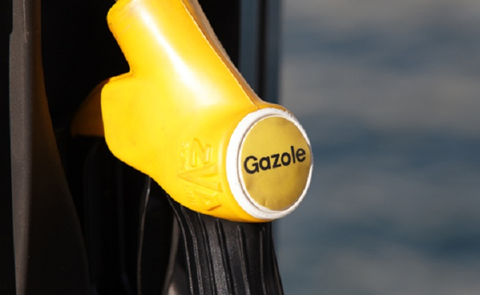
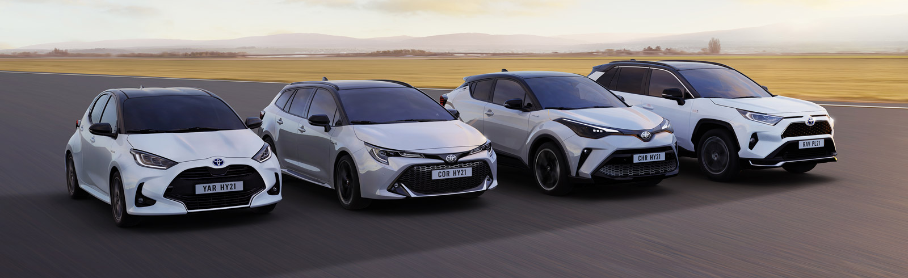
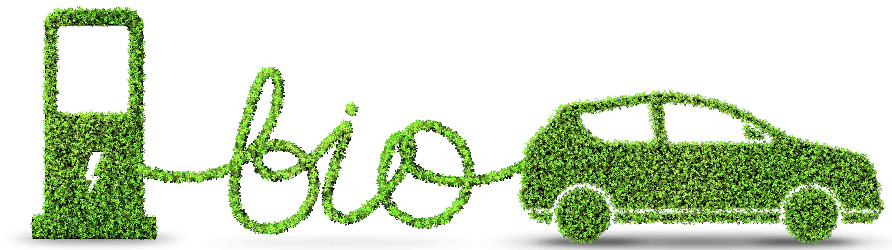
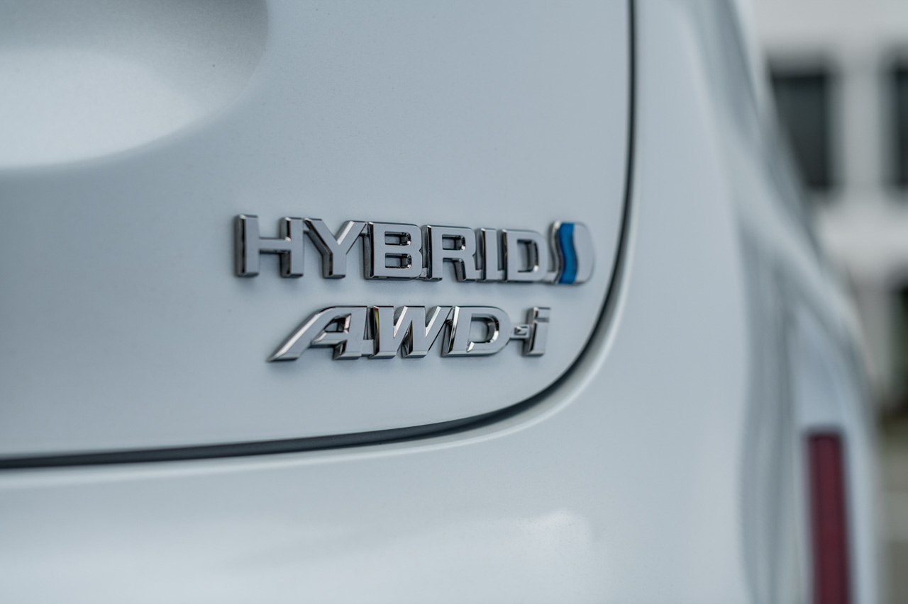

Les voitures diesel, bientôt obsolètes ?
La réduction des émissions de gaz à effet de serre est une priorité depuis de nombreuses années, mais la tendance à passer des combustibles fossiles aux sources d'énergie renouvelables s'est renforcée récemment. En effet, avec le changement climatique, il est de plus en plus important de réduire la quantité de CO2 libérée dans l'atmosphère.
Dans cette optique, les voitures diesel seront-elles bientôt obsolètes ?
Pourquoi les voitures diesel ne sont plus aussi populaires qu'avant ?
La réponse à cette question dépend d'un certain nombre de facteurs, notamment le prix du pétrole, la disponibilité du carburant diesel et l'efficacité des moteurs diesel.
Ces dernières années, le prix du pétrole a été volatile, ce qui rend difficile de prévoir le coût du carburant diesel à l'avenir. Toutefois, les experts estiment que le prix du diesel continuera à augmenter au cours des prochaines années. Il sera donc de plus en plus difficile pour les consommateurs de justifier l'achat d'une voiture diesel.
De plus, la disponibilité du carburant diesel pourrait diminuer à l'avenir avec la popularité croissante des voitures électriques. Enfin, les progrès technologiques rendent les voitures électriques plus efficaces que jamais. Pour ces raisons, il est raisonnable de penser que l'achat d'une voiture diesel en 2022 pourrait ne pas être un investissement judicieux.
L'interdiction de vente de véhicules diesel
À la suite du scandale des émissions de Volkswagen, de nombreux pays ont réévalué leur politique en matière de voitures diesel. Dans l'Union européenne, un certain nombre de pays ont déjà annoncé leur intention d'interdire la vente de nouvelles voitures diesel, les premières interdictions entrant en vigueur dès 2030.
La France et le Royaume-Uni font partie des pays qui ont annoncé leur intention d'interdire la vente de voitures diesel, et d'autres pays devraient suivre. Bien que le calendrier de l'interdiction du diesel soit encore incertain, il semble probable qu'au cours de la prochaine décennie, les voitures diesel ne seront plus autorisées à circuler sur les routes dans de nombreuses régions du monde.
Quels autres options pour votre véhicule ?
Si les véhicules diesel sont devenus de plus en plus populaires ces dernières années, ils ne constituent pas la seule option lorsqu'il s'agit de choisir une voiture. Les voitures à essence restent une option viable pour de nombreux conducteurs, et elles ont l'avantage d'être moins chères à l'usage.
Les voitures électriques sont également de plus en plus populaires, car les progrès de la technologie des batteries les ont rendues plus abordables et plus pratiques. Les voitures hybrides, qui combinent l'essence et l'électricité, sont une autre option qui mérite d'être envisagée.
En définitive, le meilleur véhicule pour vous dépendra de vos besoins et préférences spécifiques. Mais quel que soit votre choix, il existe de nombreuses options autres que le diesel.
Le bioéthanol, qu'est-ce que c'est ?
Le bioéthanol est un carburant renouvelable fabriqué à partir de matières végétales, et il pourrait remplacer le diesel comme carburant pour les transports. Le bioéthanol brûle plus proprement que le diesel, produisant moins d'émissions de gaz à effet de serre et d'autres polluants. De plus, le bioéthanol est renouvelable et durable, ce qui en fait une option plus écologique que le diesel.
L'utilisation du bioéthanol comme carburant pour les transports présente quelques difficultés, comme le manque d'infrastructures pour la distribution du carburant, mais ces difficultés peuvent être surmontées avec du temps et des investissements. En résumé, le bioéthanol est une alternative prometteuse au diesel, et il pourrait jouer un rôle majeur dans la réduction des émissions du secteur des transports.
Choisir une hybride ? Les points forts.
Lorsqu'il s'agit de choisir une nouvelle voiture, de plus en plus de conducteurs envisagent les modèles hybrides. Les voitures hybrides combinent les meilleures caractéristiques des véhicules à essence et des véhicules électriques, offrant ainsi un certain nombre d'avantages par rapport aux voitures traditionnelles.
Pour commencer, les hybrides ont tendance à être plus économes en carburant que leurs homologues à essence. Cela est dû en partie au fait que les hybrides utilisent des moteurs électriques pour une partie de leur puissance, ce qui signifie qu'ils consomment globalement moins d'essence. En outre, les hybrides produisent beaucoup moins d'émissions que les voitures à essence, ce qui en fait une option beaucoup plus écologique.
Enfin, les hybrides ont tendance à avoir une durée de vie plus longue que les voitures traditionnelles, grâce à leurs batteries et autres composants de haute qualité. Pour toutes ces raisons, il n'est pas étonnant que les voitures hybrides soient de plus en plus populaires auprès des conducteurs du monde entier.